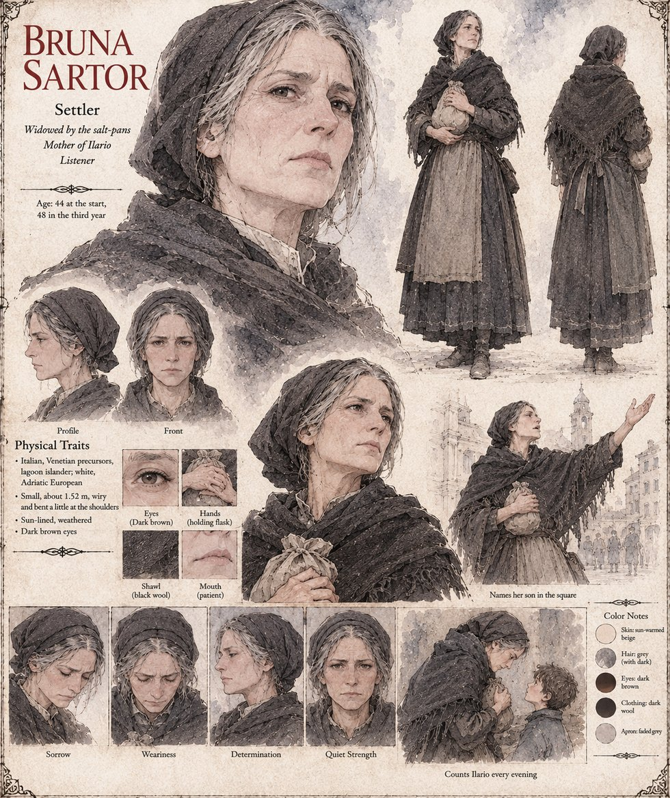

Bruna Sartor
Settler, widowed by the salt-pans · mother of Ilario · founder in all but name of the Listeners · 44 at the start, 48 in the third year
A small, lined, tireless woman of forty-four, widowed by the salt-pans, who has raised her only son Ilario on the proposition that nothing could happen to him so long as she was watching. For nineteen years she has filled a flask of lentil soup for him, wrapped in a cloth and still warm, and every evening she counts him: He was there. He was always there. She fills two flasks, one for his first watch and one for the second, which she carries to the Kindling and presses on whichever lamplighter passes, on the principle that a flask delivered to a stranger will find its way to a son. On the twenty-first of Iverin he has gone out early to the Far Lamp and she cannot give him the second; she stands in the square with the flask warm against her chest, counts the lamps of the Ring and finds them all. Next morning, as the village searches, she stands at her door counting the searchers, the lamps and the hens, and the total comes out one short. She does not shut the door for eleven days.
At the second Kindling the hollow screams, and she says That is my son. The grave holds a brass badge, a boot and a heel of loaf, and she counts the spadefuls aloud to forty, because there is no forty-first. At the Inquest of Lights she is the first witness and the last; the Legate tells her It is your son’s voice, Sartor. It is not your son. and she answers Then the Sun has given me his voice back. It is, the narrator says, the moment the war began. The Listeners at the fence hold a doctrine she had not so much devised as been unable to avoid, that the Sun did not need lamps, and she keeps the front row each evening with the flask on her knee. On the evening a tall foreigner first sits at the end of the row she carries it to him, for whoever was passing. On a night in Lorren she sits beside him in the snow and tells him her son was nineteen; he answers with his daughter Tsuru, six when he last saw her, and the sum he does aloud in her language, and she says Both. At the Great Lighting she says the drifting seed looks like the ash of a great many small things; he tells her it is seed, and she says Then they have not burned it, They have planted it. When the Interdict puts out the Hearth-Lamp she stands in the third row and says she has a fire at home, and the village relights the Ring from its kitchens; she lights eleven lamps herself and stands a long time at Lamp Forty, looking toward the dark one beyond.
By the third year the Listeners have thinned to forty and she is gray now, and forty-eight, with a flask that has been empty for a year. When the bloom sings a deserter’s thirteen seconds she says It is not him, and the pale man on the stool beside her answers No. Three evenings later a twist of oiled paper of shrimp, salted and roasted, arrives at her door, exactly as her husband, dead twenty-three years, never once made them. She stands up before the bloom has opened, which no Listener has done in three years, walks home and does not come again; the Listeners find the bucket coming up dry. She plants ordinary white lilies at the edge of the Lit Ground. The Antiphonary ends at seventy entries; on the noon of every twenty-second of Iverin she walks out to Lamp Forty-One, stands for exactly as long as it takes a flask of lentil soup to cool, and pours it on the turf, which grows very green. Salted shrimp come to her door perhaps twice a year, and she sets a second cup at her table on the evenings they arrive.
The manuscript gives her ages (forty-four at the start, forty-eight in the third year), her small stature, her lined face, the good black shawl, the flask held to her chest and the salt-pan widowhood; it gives no height, hair or eye colour. The sheet’s height of about 1.52 m, wiry build bent a little at the shoulders, sun-lined face, dark brown eyes, grey hair with dark in it, black kerchief, grey apron and boots are its own, as are its panels Sorrow, Weariness, Determination and Quiet Strength. Its scene Names her son in the square draws her with an arm raised before a bell-tower; in the manuscript she stands in the third row and speaks, with no raised arm. In Counts Ilario every evening the boy she bends toward is the sheet’s. Its title lines (Settler, Widowed by the salt-pans, Mother of Ilario, Listener) follow the manuscript.
“That is my son.”
Appears In

Related Subjects


Related Records

In Kerren, with forty folding stools set out at the fence beyond the last lamp, the dusk has an order: the silence for the wick, the first star, the voice if it came, the name said together. Sabino Rizzo keeps the Antiphonary; Bruna Sartor rises from the front row with her flask and holds it out to Higaide at the end of the line, For whoever is passing, while Ubaldo stands at the far end of the fence with the shovel upright in the earth.